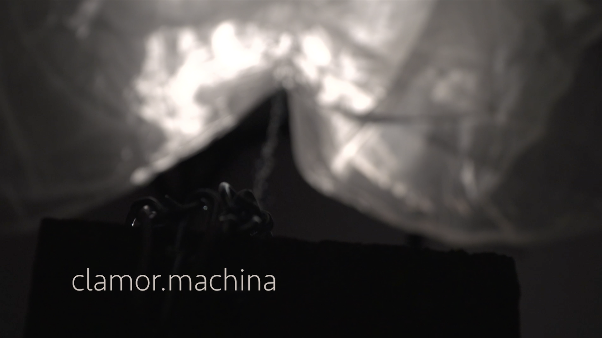

Clamor Machina
The clamor.machina is an emotional hybrid oscillating between the sentient being and the piece of hardware. It is placid and cold as the mechanical world would require, but tender and delicate when we come closer and listen. The proximity of the interaction with human beings triggers emotional reflux, a desire to share, to let it go. The machine then begins to breathe delicately always as a proof of vulnerability, following the soft drone sound of the stepper motors. The interaction reveals its essence.
We no longer fear to expose ourselves and socially, we are encouraged to share information online about our everyday lives. We share our thoughts, our feelings, our worries. But what if machines also had the ability to do so? What if they could be capable of emotions? If so, what could trigger those emotions? Would they share it with humans? And how humans would react to those emotions? The clamor.machina unfolds into three different systems: the sensing, the kinematic and the hydration systems. The sensing part uses a proximity sensor (Maxsonar EZ0) to detect the presence of beings in its surroundings. The kinetic part involves two motors that take care of twisting, pulling up and down long pieces of semi-transparent fabric that hangs a grid on the ceiling. The hydration system is made of a submersible pump connected to a PVC tube cribbled with small holes that allows water to flow a few drops at a time. Nylon wire is used in order to create the impression that the fabric is floating over the floor and to connect the different pieces of fabric kinematically as discreetly as possible.
The Arduino employs the proximity sensor as an analog input to the world when viewers are close enough to the machine, the microcontroller sends digital signals to the motor in order to trigger their rotation in a semi-erratic way, to the pump to begin pumping and to MaxMSP to faster the playback speed of the crying sound.
Collaboration with Samuelle Bourgault and Nina Parenteau.